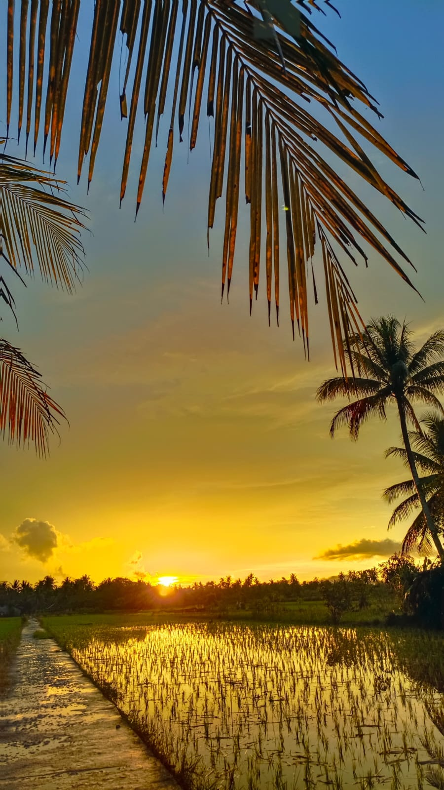

GALERI
Galeri Desa Serunai
Dokumentasi lingkungan dan kehidupan Desa Serunai.

Pemandangan Desa
Keindahan lingkungan desa

Lingkungan Hijau
Lingkungan yang asri

Alam Desa
Keindahan alam sekitar
Jalan Desa
Akses dan lingkungan desa